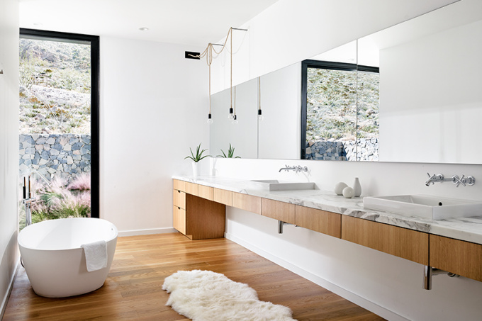
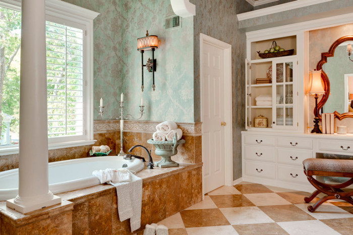

E para encerrar vários designer de banheiros, para que tenha um conhecimento decorativo deste ambiente.
Como vemos é um banheiro rústico com uma harmonia de cores, e logo após há um banheiro modeeno elaborado pela Alison Victoria que focou em uma unica cor para seu trabalho. 
Projetado pela Hazelbaker Rusheste banheiro possui traços minimalistas. Com um espelho por toda a extensão da parede amplia visualmente. E este banheiro vintage com uma bela banheiro uma coluna que remete a um era.